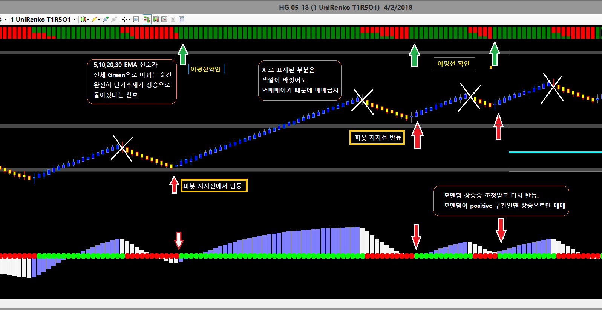
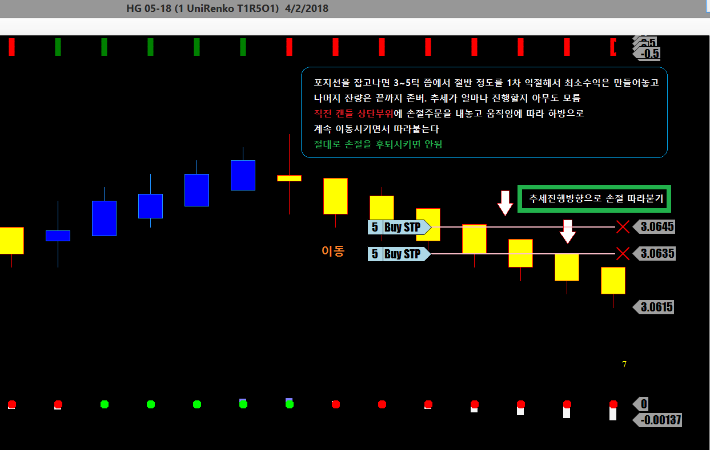

챠트세팅
NinjaTrader 7
UniRenko 1-5-1
보조지표
UniRenko Bar
Pivot
HeikenAshi
Squeeze
Ribbon

매매방법
1. UniRenko 색깔이 바뀌면 일단 Squeez의 매매신호 색깔 바꼈나 확인 후
2. 모멘텀 방향 확인하고
3. 윗쪽의 Ribbon 으로 이평선이 완전히 방향을 잡았는지 확인 한 후 진입
세가지 신호가 다 맞아야 진입하기 때문에 성공확률이 매우 높다
한가지 주의할 점은 장세가 작게 움직이면서 횡보중이거나 움직임이 없을 땐 매매금지.
포지션 정리하는법

포지션 정리
1. 직전 캔들 윗부분에 손절을 대고 진행 방향으로 따라붙다가 방향 바뀌면서 올라와 손절 걸리면 마감
이런식으로 Rule을 정해놓으면
어느 부분에서 나올건지 고민할 필요도 없고 가는데까지 그냥 따라가면 되는 간단한 방법
가끔씩 추세가 분출할 때 대박도 가능한 방법이다
언제 들어가는냐도 중요하지만 언제 나오는가가 더 중요하다
이평선만 가지고 결정을 하자니 이평선만 살짝 깼다가 다시 진행하는 경우가 많아서 믿을 만하지 못하고
이평선이 깨진 지점이 어딘지 정확하게 알 수 없고 캔들 몸통까지 완전히 빠진고 나면 너무 늦은 상황이된다
이럴때 아래 방법대로 하면 정리시점을 잡기가 쉽고 선물이 길게 뻗을 때 존버하면서 대박도 가능한다
이 방법은 UniRenko 1-5-1이라 손절에 걸리려면 6틱을 뒤로 빼야 손절에 걸리게 된다
지난 12년간 구리선물의 Data를 가지고 돌려본 결과 6틱 반등이면 단기 추세전환인 경우가 93.265% 였다
이 6틱 반등은 오직 구리 선물에 잘맞는 방법이고 다른 선물은 또 다르게 세팅을 조절해야 한다
선물 매매라는게 이런식으로 정해진 룰이 없으면 매일같이 눈치작전하다가 엄청난 스트레스만 받고
돈도 못벌고 결국 계좌 터뜨리고 폐업하게 되는게 일반 선물매매자들의 Typical Life span이다
닌자가 조금 비싸도 그걸로 훨씬 많은 돈을 벌 수 있다면 당연히 투자를 하는게 낫다고 본다
제대로 된 연장없이 좋은 건물을 지을 수 없고
적을 압도하는 무기 없이 전쟁에서 이기기 힘들다
어떤 사업을 시작해도 어느 정도 창업 자금이 들어간다
선물매매로 인생역전을 꿈꾼다면 당연히 그에 걸맞는 투자를 해야할것이다